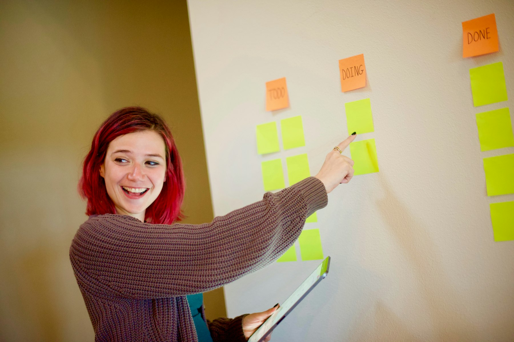

TL;DR
ClickUp is an excellent choice for new teams looking to establish a project management system. Start with the free plan; upgrade when team size or project complexity increases. Automate tasks and utilize templates to boost efficiency.
Quick Verdict: ClickUp for New Teams
For new teams seeking an organized project management system, ClickUp stands out as a comprehensive tool. Its versatility caters to both small startups and larger teams, providing features ranging from task management to advanced reporting.
Upgrading to a paid plan can significantly expand feature availability, particularly for larger teams needing more advanced integration options.
However, starting free allows teams to build essential structures without immediate costs, with the potential to scale with the team's growth.
Who Should Stay Free and Who Should Upgrade
Teams of varying needs can leverage ClickUp differently. Smaller teams, particularly those comprising up to 5 members with simple needs, may find the free version adequate.
This version provides essential features like task assignments, due dates, and basic dashboards, which are sufficient for a high-impact, agile workflow.
In contrast, medium-sized teams, especially those that surpass five members or require advanced integrations (like time tracking or reporting tools), should consider upgrading for as little as $5 per user per month.
This unlocks features like automation, which can save hours of manual work each week. The decision hinges on team size and specific requirements; staying free can be advantageous for teams just testing the waters, but growth often necessitates an upgrade.
Where Premium Starts Paying for Itself
Premium features in ClickUp offer efficiency boosts that can pay off quickly. Notably, automation capabilities allow teams to set up recurring tasks, reducing the time spent on repetitive actions.
For instance, automating weekly status updates can save approximately 3 hours a week for a small team. Similarly, access to Gantt charts and advanced reporting tools enables project managers to visualize timelines effectively and allocate resources more intelligently.
The cost of upgrading often recoups itself through time saved, especially when teams efficiently manage projects with clear visuals. Even a single project launch can benefit from these efficiencies, underscoring how timely decision-making in upgrading ensures smooth operations.
A Real Setup or Switching Scenario
### A Real Setup or Switching Scenario
Consider this 30-day timeline for a new team setting up ClickUp. Begin with Week 1, where team members familiarize themselves with the platform through a combination of guided tutorials and hands-on exploration.
For example, dedicate approximately three hours over three days to watch training videos and participate in team discussions. This foundational step helps the team outline clear project goals, like increasing product delivery efficiency by 20% within the next quarter.
In Week 2, the focus shifts to building task lists and assigning responsibilities. Encourage team members to create at least five specific tasks each, ensuring everyone understands their roles within the broader context of the project.
For example, a marketing team could delineate tasks such as "content creation," "social media scheduling," and "analytics tracking," while assigning a deadline of two weeks for initial deliverables.
Communication can be facilitated through ClickUp’s comment feature, making it easier to track questions and feedback.
By Week 3, leverage ClickUp’s templates to define common workflows. Consider using a template for weekly sprints that includes task statuses (To Do, In Progress, Done) and incorporating tags like "Urgent" or "High Priority" to streamline project management.
Also, introduce automation functionalities: set up an automated reminder to notify team members 24 hours before a task’s due date. For instance, if the team has recurring tasks such as "monthly report preparation," automate notifications to ensure accountability.
In Week 4, gather the team for feedback sessions to refine processes. Schedule a two-hour meeting at the beginning of the week to discuss what’s working well and what can be improved.
Ask each member to come prepared with two points of feedback based on their experiences thus far. This could reveal that while the task assignment process is effective, some members feel overwhelmed by notifications.
Therefore, a possible tradeoff could be to adjust notification settings for specific teams and tasks, reducing noise while still keeping everyone informed.
For a real scenario, consider a marketing agency that transitioned to ClickUp. In their first month, they launched a campaign for a new client.
Initially, team members struggled with overlapping responsibilities, leading to missed deadlines. Through this structured timeline, they clarified roles in Week 2, adopted templates for ad campaign workflows in Week 3, and streamlined communication in Week 4. Within 30 days, the team not only regained their footing but also delivered the campaign ahead of schedule, highlighting the potential for ClickUp to enhance team coordination and efficiency when properly implemented.
Mistakes, Hidden Costs, and Overkill Choices

New teams often make the mistake of overcomplicating their ClickUp setup. For instance, overwhelming features like custom workflows can lead to confusion rather than clarity, detracting from overall productivity.
Setting up too many task parameters could result in bottlenecks, causing frustration among team members who are unsure of what tasks to prioritize.
Additionally, neglecting to gather user feedback can create a disconnect between the tool and its users. A significant consequence of this misstep is wasted resources and time, leading to dissatisfaction with project management outcomes.
To mitigate these risks, start with fundamental project structures and evolve the setup based on team input and needs. Less can indeed be more when configuring tools.
Best Pick by User Type
Choosing the right project management approach in ClickUp hinges on your team's unique needs. For smaller teams with simple workflows, the free version of ClickUp serves as a fine starter, offering essential functionality without financial commitment.
For mid-sized teams actively pursuing multi-project management, the paid tier becomes invaluable, with enhanced automation and reporting capabilities supporting efficiency.
Larger organizations, especially those with complex project requirements, often benefit most from upgraded plans, facilitating extensive customization and integration.
Evaluating team size and operational complexity leads to informed decisions on upgrading, ensuring your project management strategy aligns with your business goals.
FAQ
What features should we use in ClickUp for project management?
Start with task management, document sharing, and reporting features. As you grow, consider automations to enhance efficiency.
How can we tell when to upgrade from the free ClickUp plan?
If your team has grown beyond five members or requires advanced features like integrations and time tracking, it may be time to upgrade.
This article provides practical insights into maximizing ClickUp for project management and is regularly updated for accuracy.
Choose faster
Use this article to narrow the field then compare your top options by price, setup friction, and upgrade risk.
Search more articles
Find related tools, workflows, and guides.
Photo credits
- Photo 1: Vitaly Gariev via Unsplash
- Photo 2: Vitaly Gariev via Unsplash
- Photo 3: Timur Shakerzianov via Unsplash
- Photo 4: Kelly Sikkema via Unsplash
- Photo 5: Parabol | The Agile Meeting Tool via Unsplash